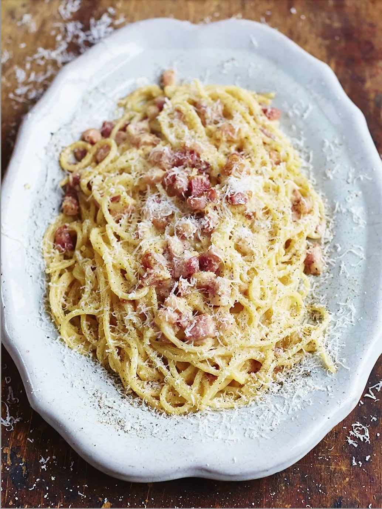

Gennaro's Spaghetti Carbonara

Jamie Oliver brings us this quick spaghetti carbonara. Don't let the short ingredient list and
minimal preparation time fool you, only a small handful of ingredients are needed for an absolutely fantastic dish.
Serve it with a nice herby green salad on the side to refresh your palette, this would also pair well with
a bottle of pinot gris.
- 3 large egg yolks
- 40g Parmigiano-Reggiano, plus extra to serve
- 150g piece of higher-welfare pancetta
- 200g dried spaghetti
- 1 garlic clove
- Extra virgin olive oil
- Put the egg yolks into a bowl, finely grate in the Parmigiano-Reggiano, season with pepper, then mix well with a fork
and put to one side.
- Cut any hard skin off the pancetta and set aside, then chop the meat.
- Cook the spaghetti in a large pan of boiling salted water until al dente.
- Meanwhile, rub the pancetta skin, if you have any, all over the base of a medium frying pan (this will add
flavour, or use 1 tablespoon of oil instead), then place over a medium-high heat.
- Peel the garlic, then crush with the palm of your hand, add it to the pan and leave it to flavour the fat
for 1 minute. Stir in the pancetta, then cook for 4 minutes, or until it starts to crisp up.
- Pick out and discard the garlic from the pan, then, reserving some of the cooking water, drain and add the
spaghetti. Toss well over the heat, then remove the pan from the heat.
- Add a splash of the cooking water and toss well, season with pepper, then pour in the egg mixture – the
pan will help to cook the egg gently, rather than scrambling it. Toss well, adding more cooking water until
it’s glossy.
- Serve with a grating of Parmigiano-Reggiano and an extra grating of pepper.